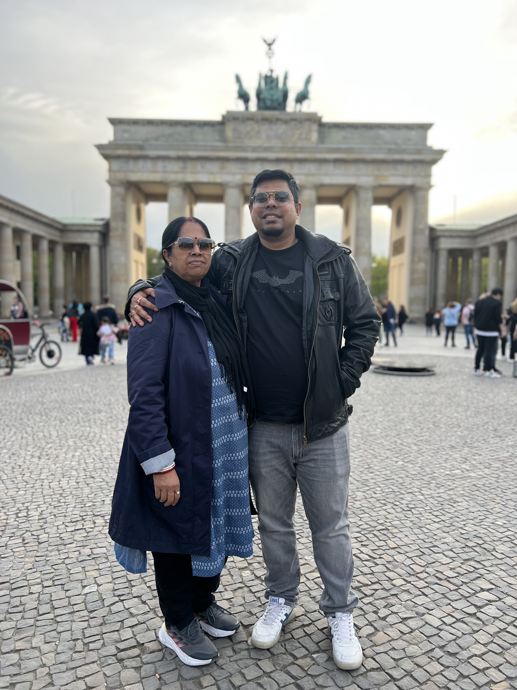
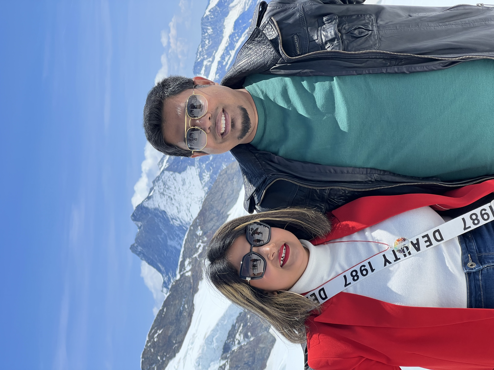

My Wonderful Family

Family is a special and essential part of our lives. It is a source of love, support, and happiness. In my case, I am blessed with an incredible family that brings joy and meaning to my life.
Let me introduce you to the remarkable individuals who make up my family.
First and foremost, there is my father, Dr. Asutosh Pal. He holds a Ph.D. in Child Psychology and has dedicated his career to teaching. Now retired, he continues to inspire me with his wisdom and guidance. Besides his academic pursuits, he has a passion for gardening and takes care of all the household chaos by ensuring we have everything we need. He has built our beautiful home in Tufanganj, West Bengal, India, where he resides.
Next is my mother, Mala Pal. She used to be a Bengali Language Teacher but decided to leave her job after my birth to focus on taking care of our family. She is a loving and nurturing presence in our lives. She finds solace in listening to Rabindra Sangeet, indulging in novels, and cooking delicious Bengali cuisine. Together with my father, she resides in our family home in Tufanganj, West Bengal, India.
Lastly, there is my incredible wife, Sumana Saha. We got married on 27th July 2017 after meeting at Infosys Technology Ltd. in Hyderabad, India. Just like me, she is also a software engineer. She has a flair for makeup and dressing, and her style is truly captivating. Most importantly, she loves me unconditionally, and our bond is the pillar of strength in my life.
Having such a supportive and loving family has shaped me into the person I am today. They are my pillars of strength, always there to celebrate my successes and provide comfort during challenging times.
Family is not just about blood relations; it's about the connections and love we share. It is a constant source of inspiration, encouragement, and happiness. I am incredibly grateful to have such a wonderful family that brings so much joy to my life.
Father

Name: Dr. Asutosh Pal
Qualifications: Phd. in Child Psychology, MSc. Mathematics
Occupation: Retired Teacher
Hobbies: Gardening
Location: Tufanganj, West Bengal, India
Mother
Name: Mala Pal
Qualifications: MA. Bengali
Occupation: Bengali Language Teacher, currently a home maker
Hobbies: Listening to Rabindra Sangeet, Reading Novels, Cooking Bengali Food
Location: Tufanganj, West Bengal, India
Wife
Name: Sumana Saha
Qualifications: M.Tech. Software Engineering
Occupation: Software Engineer
Hobbies: Makeup, Dressing
Thank you for taking the time to learn